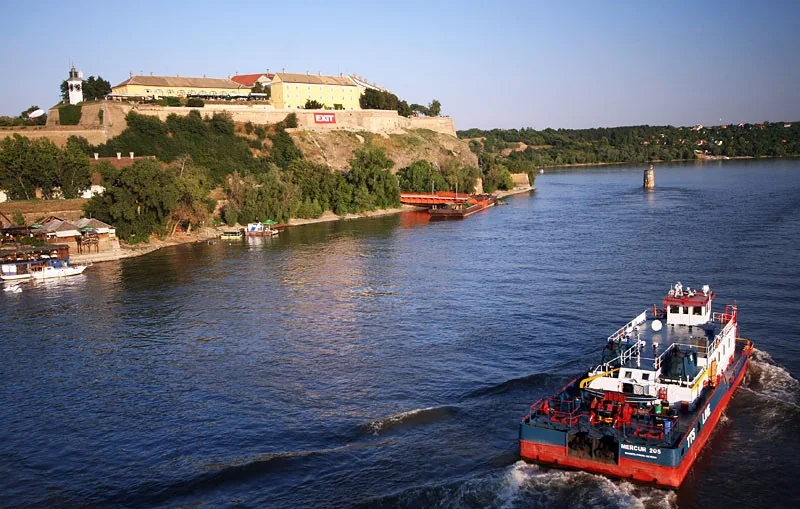

Festival history
EXIT Festival: From Novi Sad to the Global Tour
A student movement became a fortress festival with one of Europe’s best-known electronic arenas. After 2025, the name began travelling without its Novi Sad home.
The fortress era ended after 25 years.
For most of its history, EXIT meant four July nights inside Petrovaradin Fortress. Rock, hip-hop and pop occupied parts of the site, while the Dance Arena became an international electronic destination in its own right. That fixed definition changed after 2025, and any current guide has to separate the Novi Sad festival from the events now travelling under the wider EXIT organisation.
The search phrase EXIT Festival Novi Sad refers to that former flagship at Petrovaradin. EXIT Festival Serbia usually means the same event, rather than every newer project made by the organisation.
What happened after EXIT 2025.
EXIT announced that the 10 to 13 July 2025 anniversary edition would be its last festival in Serbia under what it described as pressure following support for student protests. More than 200,000 visits were reported across the four days. That cumulative figure is not the number of unique people inside the fortress at one time.
| Fact | Current information |
|---|---|
| Founded | 2000 at University Park, Novi Sad |
| Fortress editions | 2001–2025 at Petrovaradin Fortress |
| Final Serbian edition announced | 10–13 July 2025 |
| 2026 format | Global tour and separate new festivals |
| Novi Sad return | Not confirmed |
| Core music | Multi-genre, with house and techno centred at the Dance Arena |
There was no Novi Sad EXIT Festival in 2026. The organiser instead developed an EXIT global tour, including events in Montenegro and the new Starlight festival near the Pyramids of Giza in Egypt. EXIT has explicitly said that these projects are new festivals and tour stops, not a simple relocation of the Petrovaradin event.
From a student movement to the fortress.
The first EXIT took place in 2000 at University Park in Novi Sad. It ran as a long programme of concerts, talks and cultural events connected to a student movement opposing Slobodan Milošević's government and encouraging political participation. After the 2000 election, the festival moved to Petrovaradin Fortress for its 2001 edition.

That origin remained part of EXIT's public identity even as the event became a commercial international festival. The relationship between activism, state support and festival management was not simple, and Serbian critics have argued over it for years. The 2025 rupture returned the political question to the centre of the event.
Petrovaradin Fortress and the Dance Arena.
Petrovaradin gave EXIT an unusual physical structure. Stages, gates, walls, tunnels and sloping routes occupied a fortified site above the Danube rather than a flat field. Moving between areas could take time even when two stages looked close on a map.
The Dance Arena used the fortress moat as a large outdoor electronic room. Its defining image was the sunrise set, when a night programme continued into morning below the stone walls. That setting cannot be reproduced merely by placing the EXIT name on another event.
What music EXIT played.
EXIT was a multi-genre festival. Its main stages booked rock, punk, hip-hop, pop and electronic headliners, while other areas carried reggae, metal, bass music and regional artists. The Dance Arena developed a clearer house and techno identity, hosting artists such as Carl Cox, Green Velvet, Solomun, Nina Kraviz, Amelie Lens and Charlotte de Witte across different years.
The 2023 Keinemusik and 2016 Nina Kraviz recordings are among the most-viewed from the Dance Arena on EXIT’s own channel. They belong here as evidence of the fortress format, not as a promise about the sound or setting of every future EXIT-produced event.
EXIT as a festival network.
EXIT had already operated beyond Novi Sad before the 2026 tour. Its organisation developed or worked on events including Sea Dance in Montenegro, Sea Star in Croatia and No Sleep in Belgrade. The newer global programme expands that model by treating EXIT as a promoter and festival brand rather than one annual location.
A listing for EXIT 2 Montenegro or Starlight in Egypt describes its own event, dates and admission. It does not provide access to a future Novi Sad festival, and it should not inherit claims about Petrovaradin's stages or atmosphere.
How to follow EXIT now.
Start with the event name and location. The official EXIT site now lists separate global-tour projects, each with its own schedule and sales page. Check the promoter, venue, dates and refund terms before treating an announcement as the continuation of the Serbian festival.
Petrovaradin Fortress remains in Novi Sad, but the annual EXIT programme there stopped after 2025. A return has not been confirmed. Historical guides can explain what happened at the fortress; current travel plans need the page for the specific tour event being sold.
EXIT Festival FAQ.
Where was EXIT Festival held?
The main EXIT Festival was held at Petrovaradin Fortress in Novi Sad, Serbia, from 2001 through 2025. The first edition in 2000 took place at University Park in Novi Sad.
Is EXIT Festival still in Serbia?
No new Novi Sad edition has been confirmed after 2025. EXIT described the 2025 anniversary as its final Serbian edition under the country's political conditions and moved into a global-tour model in 2026.
Why did EXIT Festival leave Serbia?
The organiser said it faced financial and political pressure after supporting student protests and defending freedom of expression. The claim comes from EXIT itself and was also reported internationally; debate inside Serbia includes criticism of both the government and the festival's past relationships with state institutions.
What music was played at EXIT Festival?
EXIT booked rock, pop, hip-hop, punk, reggae and other styles alongside a large electronic programme. The Dance Arena was particularly associated with house and techno.
What was the EXIT Dance Arena?
The Dance Arena was a large electronic stage in the moat of Petrovaradin Fortress. Its programme ran through the night, and sunrise sets became one of EXIT's best-known features.
Is EXIT moving to Egypt?
EXIT says it is creating new festivals around the world rather than moving the Novi Sad event to one replacement site. Starlight at the Pyramids of Giza is a separate festival produced as part of that expansion.
Sources.
Continue reading